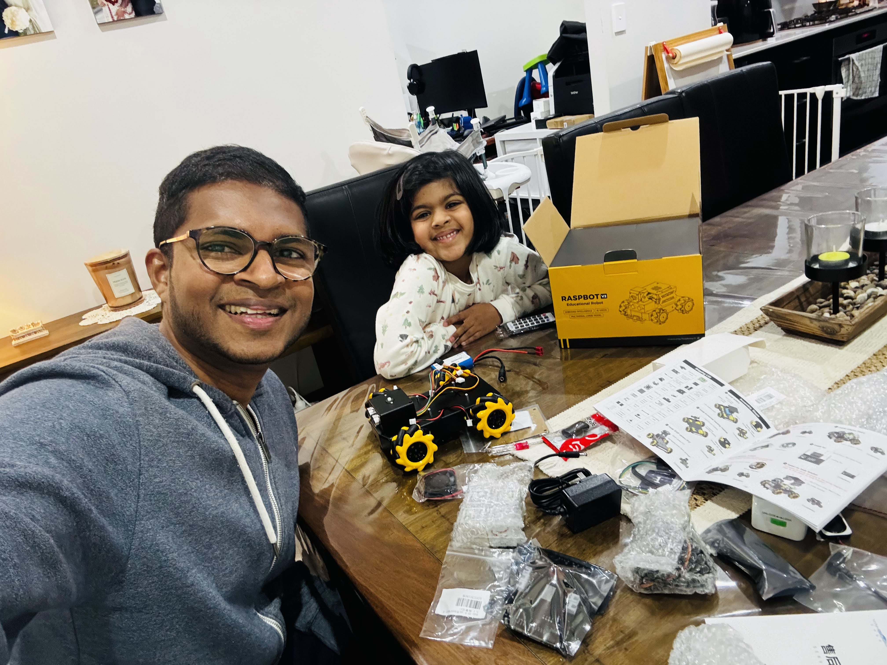
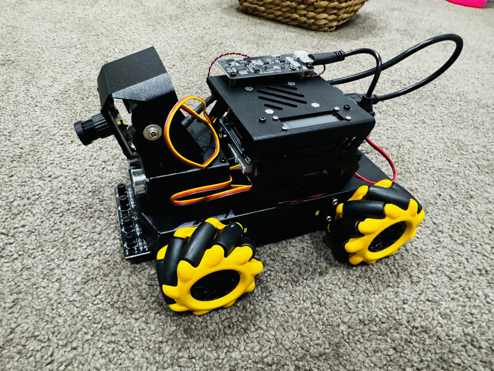
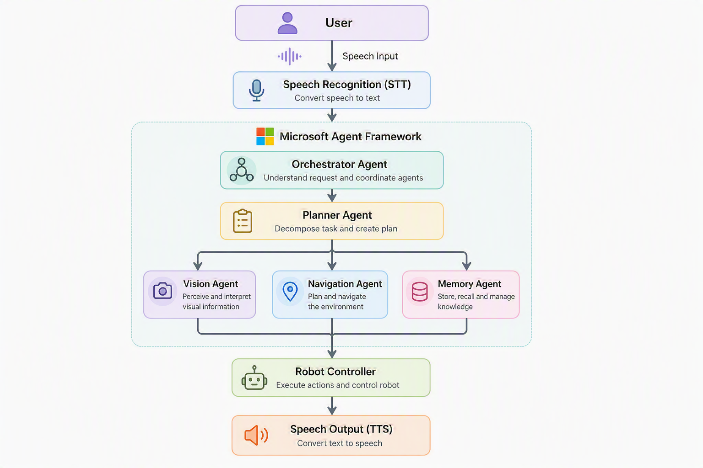
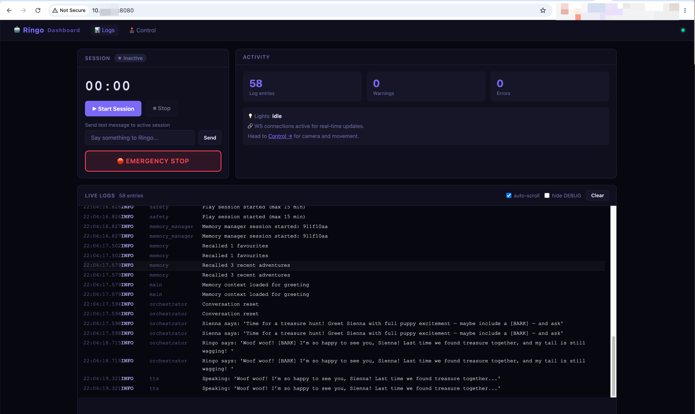
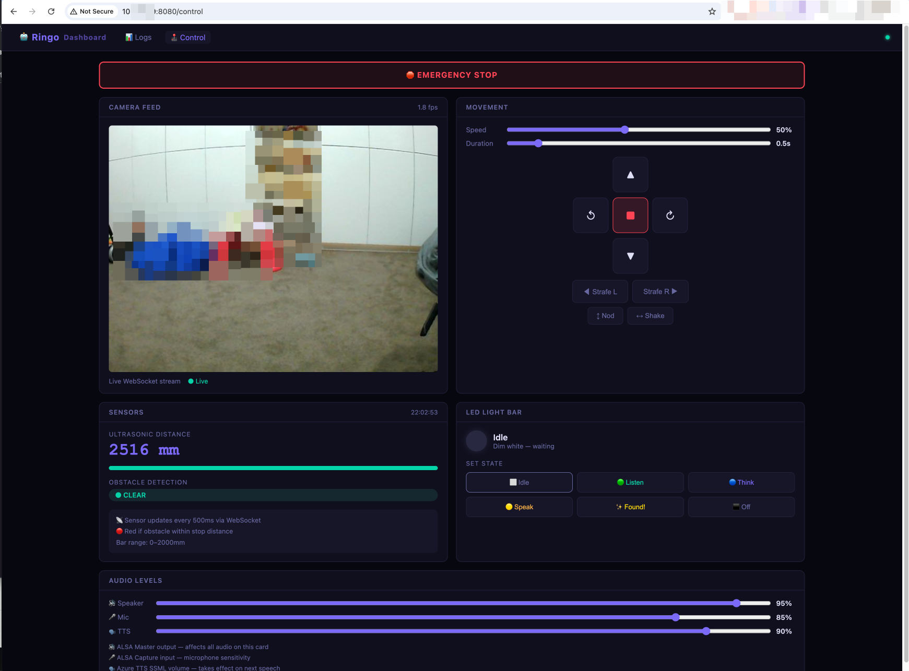

Every kid has a remote control car. Push forward, turn left, crash into furniture, recharge. The experience hasn’t changed much in 30 years. When my daughter and I started playing with the Yahboom RaspBot V2, I found myself wondering, what would a modern remote control car look like if it were designed today using AI?
That question turned into one of the most fun and technically rewarding pet projects I’ve worked on.
The answer wasn’t a bigger motor or a better controller. It was giving the car a brain, a team of specialist AI agents, each responsible for a different part of its intelligence, and a personality my daughter could actually talk to.
Meet Ringo. A robot dog that lives inside a robot car, powered by Microsoft’s Agent Framework, running on an Orange Pi 5 Pro, and very much capable of going on treasure hunts with a five-year-old.

Why This Project?
I wanted two things from this build. First, something I could genuinely learn from, hands-on experience with the Microsoft Agent Framework, multi-agent orchestration, Azure AI services, and edge hardware. Second, something my daughter could actually engage with and spark her curiosity about technology.
A robot with a fun dog personality that understands speech, can go find things, and responds back in a playful voice? That ticked both boxes.
The Hardware
Yahboom RaspBot V2 is the chassis, a four-wheeled mecanum wheel robot car with a camera mount and a solid sensor platform. The mecanum wheels are great: they let the robot strafe sideways and rotate in place, which makes navigation much more flexible.
Instead of the bundled Raspberry Pi 5, I used an Orange Pi 5 Pro. Why? It has a Rockchip RK3588S SoC with an integrated NPU capable of up to 6 TOPS, meaning future local AI inference (object detection, YOLO, OpenCV) is a real possibility without shipping everything to the cloud. It’s a powerful single-board computer, I already had one at home, and it runs Python beautifully.

Product links:
The Goal: Build Something a Five-Year-Old Can Naturally Interact With
The interaction model I had in mind was simple: my daughter walks up, says “Hey Ringo”, and then starts talking to the robot naturally. She could tell it to find her toy, ask it questions, or just chat. The robot needed to understand what she was saying, figure out what to do, do it, and talk back.
That’s actually a complex problem when you unpack it. Vision, navigation, memory, planning, speech, these are all distinct concerns. Stuffing them all into one giant AI prompt felt wrong. That’s where multi-agent architecture came in.
Why Multi-Agent Architecture?
Humans don’t think with one giant brain. Different parts of the brain specialise. A doctor examining a patient doesn’t use the same mental mode as when they’re driving home. Specialists are more accurate, more focused, and easier to reason about.
I applied the same thinking to Ringo. Instead of one AI trying to do everything, I split the intelligence into a team:
| Agent | Responsibility |
|---|---|
| Orchestrator Agent | Understands the user’s request and coordinates the team |
| Planner Agent | Decomposes complex goals into executable steps |
| Vision Agent | Processes camera images, identifies objects, reads the environment |
| Navigation Agent | Decides how to move, rotation, distance, collision avoidance |
| Memory Agent | Remembers past interactions, preferences, room layouts, conversation history |

The flow looks like this: voice input → speech recognition → Orchestrator understands the request → Planner breaks it into steps → Vision/Navigation/Memory agents execute their specialties → Robot moves → Speech output responds back.
When my daughter says “Ringo, find my pink ball”, the Planner creates a hunt plan, the Vision Agent scans for pink objects using the camera, the Navigation Agent moves toward likely spots, and the Memory Agent recalls where pink things have been found before. The whole team works together on a single goal.
Microsoft Agent Framework: The Operating System for My Agents
I chose the Microsoft Agent Framework as the backbone, and I wrote all the robot code from scratch on top of it.
The framework essentially became the operating system for the agents. It handles:
- Agent communication, agents can call each other via tools
- Tool calling, structured way for agents to trigger real-world actions
- Memory, built-in patterns for storing and retrieving context
- Planning, native support for goal decomposition
- Orchestration, routing requests between agents cleanly
- Model abstraction, swap models without rewriting agent logic
That last point matters a lot. Because of model abstraction, I could optimise each agent independently, using a fast, cheap model for things that need speed, and more capable models where reasoning depth matters.
Official docs: Microsoft Agent Framework Overview
Multi-Model Within Multi-Agent
One of the most interesting architectural decisions was using different AI models for different agents:
gpt-4o-minifor the Orchestrator, Navigation, and Memory agents, fast and cheap, good enough for coordinationgpt-4o(multimodal) for the Vision Agent, needs to actually understand imageso3for the Planner during treasure hunts, deep spatial reasoning to break down a goal into steps
This is a key insight: not every agent needs the smartest model. Over-engineering the model selection wastes money and adds latency. Match the model capability to the task complexity.
Cloud vs Local AI: The Latency Trade-off
I used cloud AI services throughout this first version, and it introduced a real tension: cloud models are incredibly accurate, but the round-trip latency kills the real-time feel.
Here’s how I broke it down:
Cloud (Azure OpenAI):
- All LLM reasoning (GPT models for orchestration, planning, conversation)
- Vision analysis, I used
gpt-4oto identify objects from camera frames - Speech recognition and TTS, Azure Speech Service for both directions
Local (on-device):
- Wake word detection, “Hey Ringo”, “Hi Ringo”, “Hello Ringo”, I wrote custom firmware for the AI voice board to trigger locally. No way was I paying for cloud calls just to detect a wake word.
The honest truth about latency: It’s laggy. The full cycle, capture image, send to cloud, get response, plan movement, execute, takes noticeably longer than a snappy in-person interaction. My daughter sometimes got impatient waiting for Ringo to respond. It works, but it’s not seamless yet.
Future plan: Move object detection to the Orange Pi 5 Pro’s NPU using OpenCV/YOLO locally. That would eliminate the biggest latency bottleneck while keeping the language reasoning in the cloud where the frontier models live.
Interesting Engineering Decisions
Cancellable AI Sessions
Long-running agent chains (Orchestrator → Planner → Vision → Navigation) block traditional interrupt handling. When you’re dealing with physical hardware, you absolutely need the ability to cancel immediately, you don’t want the robot to keep driving because the AI is mid-thought.
My fix: wrap the entire session in an asyncio.Task and cancel it from any thread using loop.call_soon_threadsafe(task.cancel). This let the wake word hardware callback, the web emergency stop button, or a simple Ctrl+C abort the running chain instantly.
This is something virtual agent developers rarely think about. Physical agents need hard stops.
Web Dashboard
I built a real-time web dashboard for development and demo mode. This turned out to be invaluable for debugging, instead of physically picking up the robot to check camera angles or poke at wires, I could see everything from my laptop.

The Dashboard view gives you session management (start/stop a play session with a max time limit), live agent logs streaming in real time, and the big red Emergency Stop button. You can also send text messages directly to Ringo without using voice, great for testing agent responses without waking the household up.

The Control view has the live camera feed via WebSocket (1.8 fps, enough to see what Ringo sees), directional motor controls including strafing and rotation, ultrasonic distance sensor readout, obstacle detection status, LED light bar state control, and audio level sliders for Speaker, Mic, and TTS volume.
The LED states were a nice touch, Idle (dim white), Listen (blue), Think (purple), Speak (yellow), Found! (sparkle), each state giving a visual cue about what Ringo is doing at any moment. My daughter loved watching the lights change.
LLM Output as Hardware Signal
Rather than building a separate intent classifier, I used a simple tagging approach: the LLM outputs [BARK] or *wags tail* as lightweight side-channel signals embedded in its response text. The code parses these tags and triggers the corresponding physical actions, sounds, LED patterns, motor movements. Clean, simple, surprisingly effective.
Shared Hardware Locks
Running a multi-process robot app means multiple things wanting the same hardware. I hit two painful device lock issues:
Audio device (ALSA): Azure Speech SDK held
plughw:3,0open after the first TTS call, blocking subsequentaplaybark sounds. Fix: reset the synthesizer before each bark to release the lock.Camera: Both the voice app and the web dashboard tried to open
/dev/video0. Fix: inject the already-opened camera reference into the web server so it reuses the existing handle rather than creating a second one.
Challenges (The Honest Part)
This is where I learned the most.
Latency, latency, latency. The full cloud round-trip for vision + reasoning + speech is slow. Ringo doesn’t feel like a responsive pet, it feels like a thoughtful one. That’s not always a bad thing, but it’s not what my daughter expected.
Wake word recognition for kids. The hardware wake word worked perfectly for me. For my daughter, it was a constant battle. Her pronunciation, her excitement-level voice, background noise from the household, she struggled to trigger it reliably. I could get it working for me, but the real user (a five-year-old) had a hard time. Next version needs proper noise-cancelling hardware with built-in wake word support.
Robot drifting. Sometimes a “move forward for 3 seconds” command wouldn’t stop cleanly. The motors would keep running. LLM hallucinations in movement commands are a real thing, the model occasionally outputs malformed instructions. Defensive parsing and timeout-based motor cutoffs were the fix.
Battery life: 20 minutes. The Orange Pi 5 Pro is power-hungry. A full charge lasted about 20 minutes under active use. For a treasure hunt session, that’s actually workable, but it’s a hard constraint. Battery optimisation is on the roadmap.
LLM hallucinating movement. Occasionally Ringo would decide to do something unexpected, spin around randomly, announce that a stuffed rabbit was a fire truck. My daughter thought this was hilarious. I was less amused.
Cloud costs. Continuous camera polling with multimodal vision models adds up. Switching to local object detection will dramatically cut this.
The Part That Made It Worth It
My daughter loved it.
Not for the navigation, the multi-agent architecture, or the technical elegance. She loved Ringo the dog. The personality. The playful responses. The way Ringo would bark when it found something. She spent more time talking to Ringo than giving it missions.
That was the unexpected lesson: the technical capability is table stakes. The personality and the relationship is what makes a robot feel alive.
She also wants Ringo to have a friend called “Biscuit”. So I guess version 3 is already in scope.
Lessons Learned
Start with one agent, split later. My first version had everything in one orchestrator. I only split into sub-agents once the responsibilities were clearly understood. Premature decomposition adds latency and complexity for no gain. Start monolithic, refactor when you feel the seams.
More agents = more latency. Every agent-to-agent call adds a round trip. Understand when a single agent can handle the task and stick to it. Multi-agent shines for genuinely distinct responsibilities, not for artificially splitting one job into five.
Cloud intelligence + local speed = the right hybrid. Use cloud frontier models for reasoning and complex decision-making. Move latency-sensitive operations local. The right split depends on your hardware, your use case, and your tolerance for lag.
Physical agents change the stakes. When an agent controls something in the real world, errors have physical consequences. Defensive coding, hard timeouts, and immediate cancellation aren’t optional, they’re essential.
Hardware quality matters for voice. Software noise cancellation only goes so far. Proper microphone hardware with built-in noise cancellation and wake word support is worth the investment, especially when the primary user is a kid.
Give it a personality. The technical architecture won’t be what people remember. The character will be.
What’s Next
- Local object detection, Move computer vision to the Orange Pi NPU using YOLO/OpenCV. This is the biggest latency win.
- Multi-room navigation memory, Store a map of the house. Know which room the robot is in, what’s around it, recall previous sessions.
- Better wake word hardware, Find a mic module with proper noise cancellation and built-in wake word detection that works for kids.
- Battery optimisation, Profile the power usage and find ways to extend the 20-minute window.
- More training context, Give the LLM better grounding for Ringo’s personality so interactions are more consistent.
Final Thoughts
This project gave me everything I was looking for. Hands-on experience with the Microsoft Agent Framework. Real-world multi-agent orchestration. The challenge of edge AI on constrained hardware. The satisfaction of watching something physical move because of code you wrote.
And I got to build it alongside my daughter on a Sunday afternoon, watching her name a robot dog and tell it to find her toys.
We’re living in a genuinely fascinating moment in technology. The tools to give a physical device real intelligence, language understanding, visual perception, goal-directed planning, memory, are accessible to anyone willing to put in the hours. The barrier to entry for building something like this has never been lower.
If this project caught your interest, I’d encourage you to get your hands dirty. Pick a cheap robot chassis, a capable single-board computer, and start with one agent. See where it goes. You might end up with a garage project. You might end up with a family member.
Either way, you’ll learn something.
The complete source code for this project is a work in progress. I’ll link the GitHub repo once it’s cleaned up and ready to share.